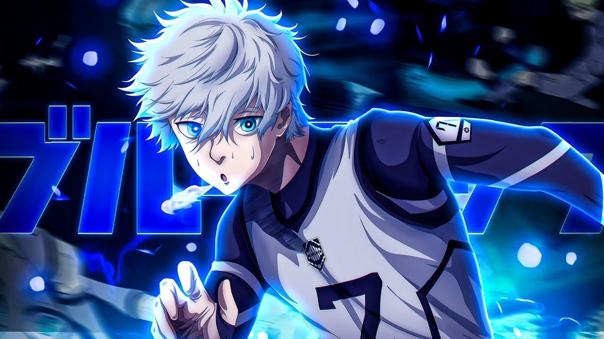

Yoichi Isagi
 |
Yoichi Isagi (潔いさぎ世よ一いち Isagi Yoichi?) is the main protagonist of the Blue Lock series. Isagi is a second-year high school student, who played as a forward for the Ichinan High School football team. When he arrived at the Blue Lock facility, he became a member of Team Z for the First Selection. His main goal is to become the world's best striker. After the Blue Lock Eleven played against the Japan U-20, Isagi is ranked as one of the top players in Blue Lock and plays as an offensive midfielder on Bastard München during the Neo Egoist League. Unlike his fellow competitors who were handpicked by Anri Teieri after watching them play, Isagi was chosen personally by Jinpachi Ego himself after seeing him play. Isagi is an ideal candidate for the type of striker Ego strives to create. |
| TEAM | POSITION | SPECIALITY |
|---|---|---|
| WHITE | STRIKER | DIRECT SHOT |
Seishiro Nagi
|  | Seishiro Nagi (凪なぎ 誠せい士し郎ろう Nagi Seishirō?) is a contender for the Blue Lock Project and the titular protagonist of the spin-off, Blue Lock - Episode Nagi, who currently plays as a rightwing for England's Manshine City in the Neo Egoist League. When first arriving at Blue Lock, Nagi was a member of Team V and was the best player in his designated stratum. After the Blue Lock Eleven played against the Japan U-20 team, Nagi ranked as one of the top players in the project. |
| TEAM | POSITION | SPECIALITY |
|---|---|---|
| WHITE | STRIKER | BALL CONTROL |